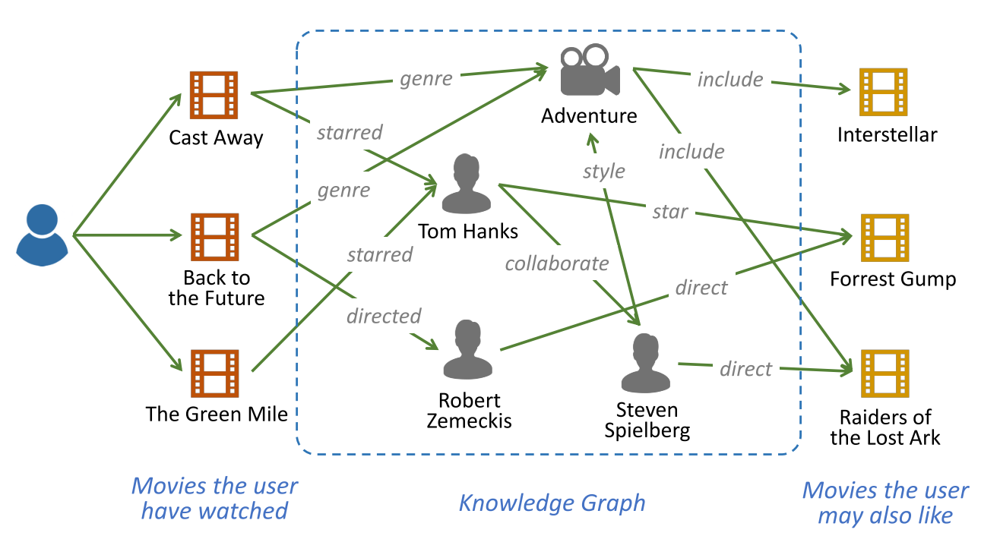
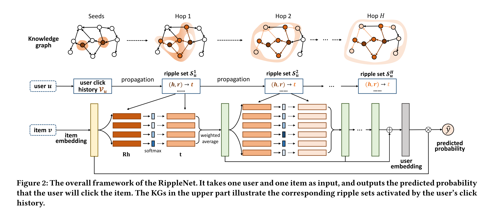
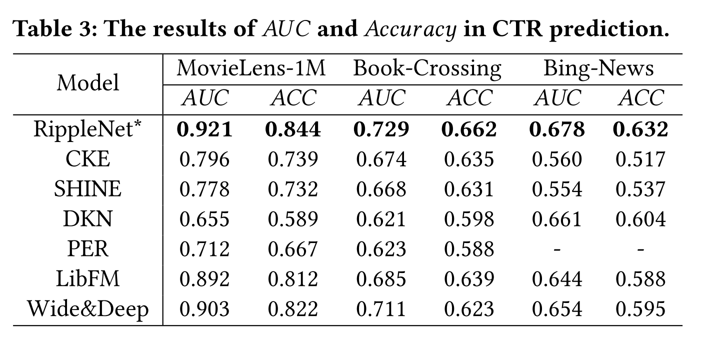

CIKM2018_RippleNet—Propagating User Preferences on the Knowledge Graph for Recommender Systems
本文是发表在CIKM2018上的使用知识图谱做推荐的工作，本文将按照下面几个方面对文章进行解析。
- Motivation
- Model
- Experiments
Motivation
一般来说，我们为了解决用户的样本稀疏与冷启动问题，我们通常都是需要使用外部信息(side-information)，比如说社交网络或者是物品的属性。但是我们只是单纯想提升推荐的效果的话，也可以使用知识图谱作为外部信息呀？
作者认为目前的一些方法都不够优雅，目前主流的使用知识图谱的方式是基于路径path-based的方法和基于knowledge-graph-aware的方法，也就是使用transE等训练好的三元组的embedding。但是这目前两种方法都存在着一些局限性。于是本文提出了RippleNet。
Introduction
在现在的海量数据的时代下，用户在购买商品，浏览新闻，购买书籍时有着海量的选择，推荐系统可以为用户个性化的推荐一些商品，这将会极大的减少用户的时间。目前的最常用的推荐方式就是基于协同过滤的方式进行推荐，该方法是基于用户的历史购买记录，但是协同过滤的推荐模式会受到数据稀疏，冷启动等一系列问题。为了解决这些问题，外部信息是必要的，比如说社交网络，user-attr矩阵，文本描述等。
在众多的外部信息中，知识图谱是对描述item关系的一种异质图。目前有很多开源的知识图谱，比如说NELL，DBpedia，Google Knowledge Graph,Microsoft Satori等。
目前众多的研究者都在尝试在推荐系统中加入知识图谱信息。
上图就是一个知识图谱的系统，其中我们通过知识图谱的话，可以很好的得到下面的几点信息：
- 知识图谱可以得到item之间的隐含连接，这也许会提升效果
- 知识图谱中边上有各种各样的信息，这也许会发掘用户的个人喜好，同时生成多样的item推荐
- 知识图谱可以为推荐提供解释信息
目前的使用知识图谱做推荐的流派主要分为两种：
Embedding-based
通过预训练的知识图谱的embedding来辅助进行推荐，前人的工作DKN就是把entity的embedding做为补充信息和word embedding一起训练。这种方法还有很多别的工作，可扩展性极高。缺点就是预训练的entity embedding并不是为了推荐而设计的，适合于link prediction任务，但是不见得适合推荐。
Path-based
这种方法是使用两个实体之间丰富的路径信息为推荐系统提供信息。Personalized Entity Recommendation和Meta-Graph Based Recommendation两篇工作将知识图谱视为异质图，同时使用meta-path抽取同质节点序列，之后学习item的embedding。这种方法的缺点就是meta-path都需要手工构造，但是meta-path的构造通常都是极其麻烦的。
为了解决上面的这些问题，作者提出了Ripple，做一个端到端的算法进行推荐。其核心思想就是
- 对于每个用户，我们可以从其历史交互的item出发，找到这些item在知识图谱中的位置，之后从这些节点向外扩展，去寻找用户的隐含的兴趣表示。
本文将前面两种方法做了一个融合
- 可以为推荐任务学习entity embedding
- 可以自动的随着路径扩展，不需要手工构造meta-path
问题描述
我们需要用知识图谱的信息预测user-item交互矩阵
模型
定义一：Relevant Entity
最初的$\mathcal{E}_u^0$就是当前的用户$u$的初始交互过的item。
定义二：Ripple Set
最初的$\mathcal{E}_u^0$就是当前的用户$u$的初始交互过的item。

这张图就很明显了，整个的计算过程就是首先从交互过的item出发，之后融合扩展的信息得到绿色的用户偏好特征，之后进行迭代，最后将所有的绿色的用户特征融合得到用户表示，再做一个点积过一个sigmoid函数得到打分。
融合方式
这里就是过了一个正常的知识图谱的乘积模型，其中$R_i\in R^{d\cdot d}$。其实这里有一种attention的味道在里面。
之后融合的方式就是：
最后重复这个过程$k$次即可。
实验

在点击率的数据集上，看上去是work的。